What’s Up There? Stratospheric Particulate Sampling & Atmospheric Profiling to 84,185 ft
Designed and built by six student engineers at Oconomowoc High School in association with NASA and Future Engineers, World 24 ascended 16 miles above Northern Arizona to capture air particulates across five atmospheric layers using a custom servo-driven rotary filter array.
Though a violent, high-speed impact at the end of the flight crushed the payload enclosure and destroyed the five active sample chambers, the onboard flight logs, 6+ hours of HD camera video, and a single shielded control filter survived—leading to an unexpected nanoscale discovery under Scanning Electron Microscopy at UW–Madison.
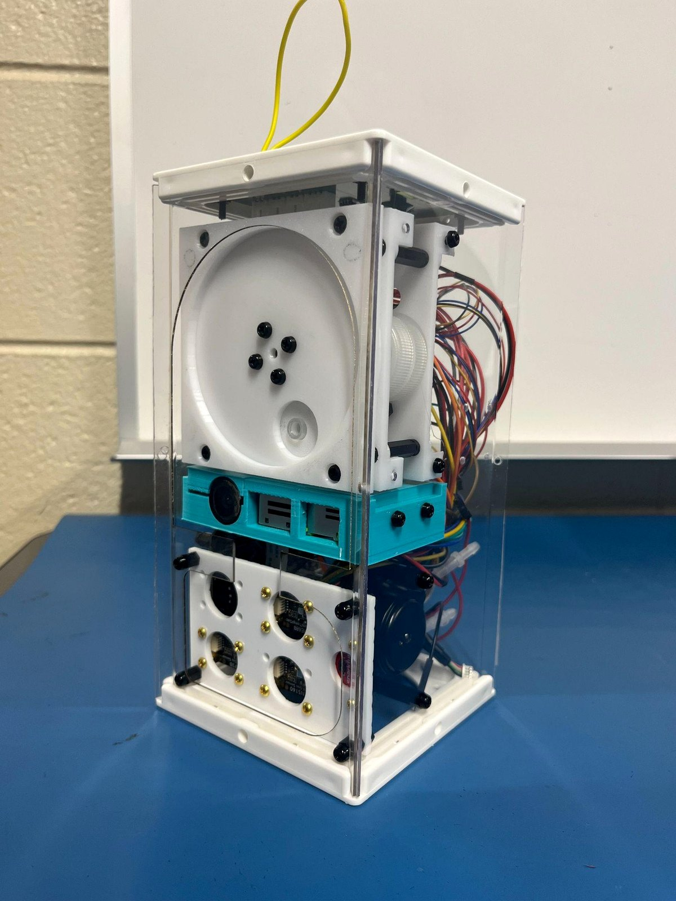
Stratospheric Flight Viewer
Reconstructed from 16,461 1-Hz flight records logged aboard World View balloon N141WV on July 1, 2026. Features real 3D canyon elevation across Page, Lake Powell, Vermilion Cliffs, and the Arizona Strip, true solar lighting from the 6:49 AM MST liftoff through solar noon, synchronized rotary filter actuation, and the real onboard payload camera feed.
Streaming 3D Canyon Terrain & WORLD_24 Telemetry…
Page, AZ · Lake Powell · Vermilion Cliffs · Arizona Strip
Probing Vertical Particulate Distribution
From our initial NASA TechRise proposal through our final engineering build, our team set out to answer a deceptively simple question: how does the particulate and chemical makeup of Earth’s atmosphere change from the desert floor into the middle stratosphere?
Terrestrial Bio-Aerosols vs. High-Altitude Metals
We hypothesized that heavier biological and terrestrial particulates—such as pollen grains, ash, dust, bacteria, and fungal spores—would remain concentrated in the turbulent lower troposphere, dropping off sharply near the tropopause, while trace gases like CO₂ remain well-mixed.
Conversely, inspired by NOAA upper-atmosphere aerosol research, we hypothesized that stratospheric samples above 40,000–70,000 feet would capture exotic metallic particulates originating from meteoric ablation and spacecraft reentry debris not present near the ground.
Autonomous Altitude-Triggered Filtration
- Altitude Lock: Our Adafruit Metro M4 Express continuously monitored real-time GPS altitude packets from World View’s flight computer via the Payload Interface Board (PIB).
- Rotary Indexing: Upon crossing each programmed threshold, an MG90S servo rotated a 3D-printed shutter disk to uncover a dedicated capsule containing a 0.1 µm polycarbonate membrane filter.
- Active Vacuum Draw & Seal: A 4.5 V DC pump pulled outside air through that filter for 7 minutes during ascent (and 3.5 hours at float), then rotated the shutter to an airtight intermediate seal before the next layer.
- Unexposed Control: A sixth rear-mounted control filter capsule remained unexposed to establish a clean baseline for post-flight Scanning Electron Microscopy (SEM).
In-Flight Capsule Actuation Log
| Capsule | Atmospheric Target Layer | Planned Trigger | Actual Open Altitude | Actual Seal Altitude | Pump Duration | Jump in 3D |
|---|---|---|---|---|---|---|
| Capsule 1 | Troposphere Layer | 14,000 ft (4,267 m) | 14,008 ft (4,269.6 m) | 21,228 ft (6,470.4 m) | 7m 02s (422 s) | |
| Capsule 2 | Near Tropopause (Jet Stream) | 28,000 ft (8,534 m) | 28,006 ft (8,536.3 m) | 35,789 ft (10,908.6 m) | 7m 00s (420 s) | |
| Capsule 3 | Lower Stratosphere | 42,000 ft (12,801 m) | 42,009 ft (12,804.5 m) | 49,942 ft (15,222.4 m) | 7m 02s (422 s) | |
| Capsule 4 | Mid-Stratosphere Ascent | 56,000 ft (17,068 m) | 56,001 ft (17,069.0 m) | 63,996 ft (19,506.1 m) | 6m 59s (419 s) | |
| Capsule 5 | Peak Stratospheric Float | Float Entry (~70,800 ft) | 70,779 ft (21,573.4 m) | 83,755 ft (25,528.4 m) | 3h 30m 00s (12,600 s) | |
| Control | Rear Shielded Baseline | Unexposed | Sealed Rear Bay | Only Surviving Sample | 0s (Control) | SEM Results ↓ |
From 12 Solenoid Valves to a Single Rotary Disk
Strict suborbital constraints—a 1,000 g mass limit, tight volume inside the TechRise flight box, and a strict electrical current cap—forced us to rethink our mechanical architecture from scratch.
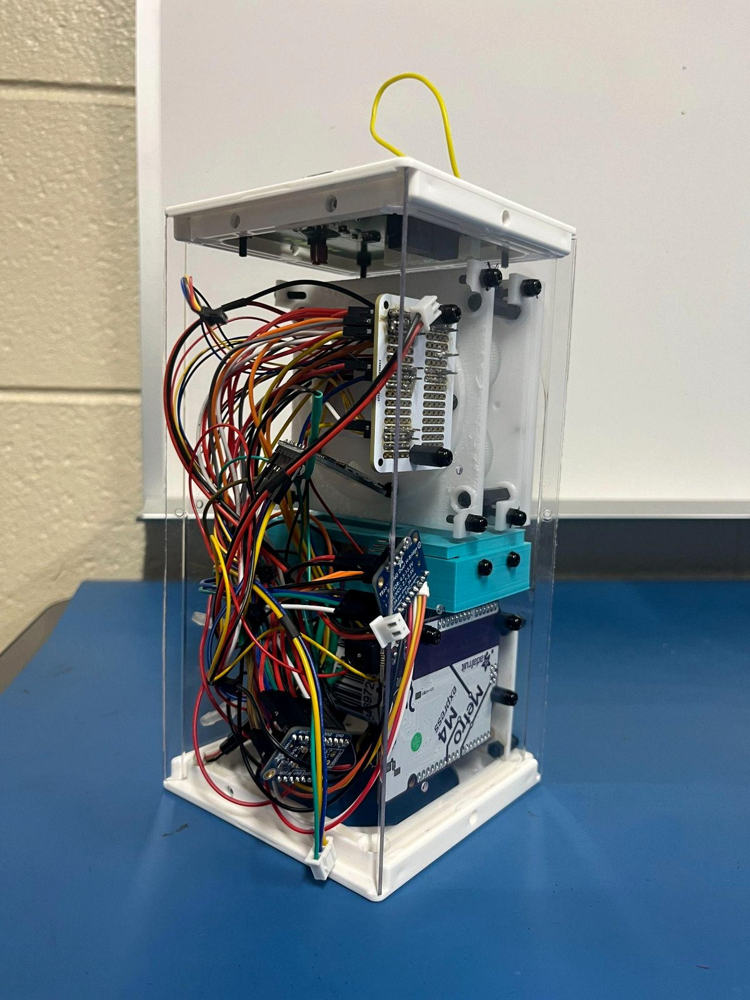
Mechanical & Fluidic Design
- 5-Capsule Circular Array: Five filter holders arranged radially behind a custom 3D-printed rotating aperture disk, plus 1 rear control capsule.
- Equal-Length Tubing Manifold: All capsule back-ports routed via equal-length silicone lines to a central 4.5 V DC vacuum pump so suction pressure stayed uniform across every port.
- 0.1 µm Membrane Filters: Polycarbonate track-etched filter membranes chosen specifically for flat, smooth particle imaging under Scanning Electron Microscopy.
Avionics & Sensor Suite
- MCU: Adafruit Metro M4 Express running CircuitPython + SPI microSD breakout logger.
- Bosch BME688: Internal temperature, barometric pressure, relative humidity, and MOX gas resistance.
- AMS AS7331: Precision 3-channel ultraviolet irradiance (UVA, UVB, UVC).
- SGP30 & ScioSense ENS160: Dual MOX air-quality sensors measuring eCO₂, TVOC, and AQI via STEMMA QT I²C.
- Sensirion SPS30 & 1080p Camera: Laser particulate sensor + continuous HD horizon camera with 128 GB microSD.
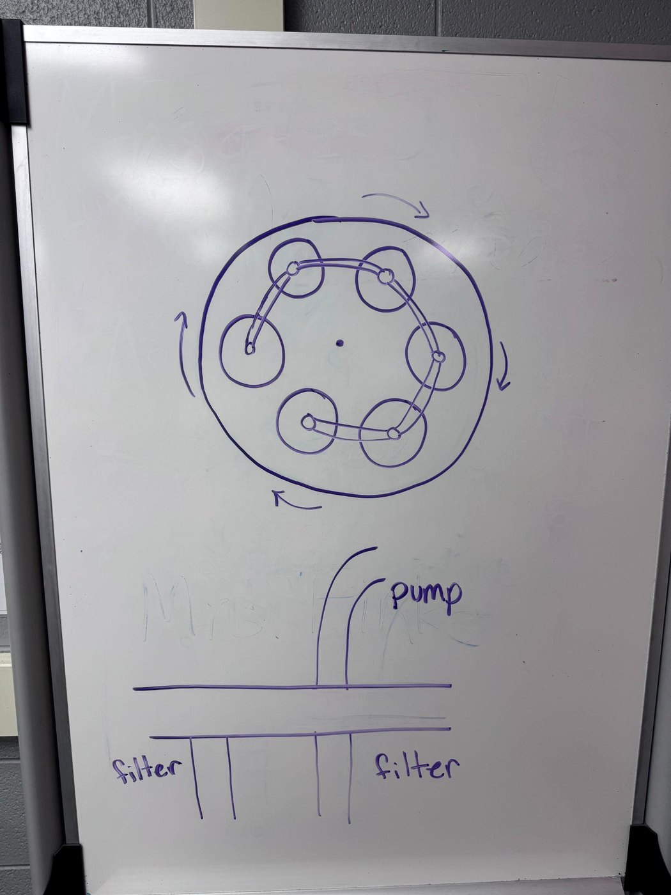
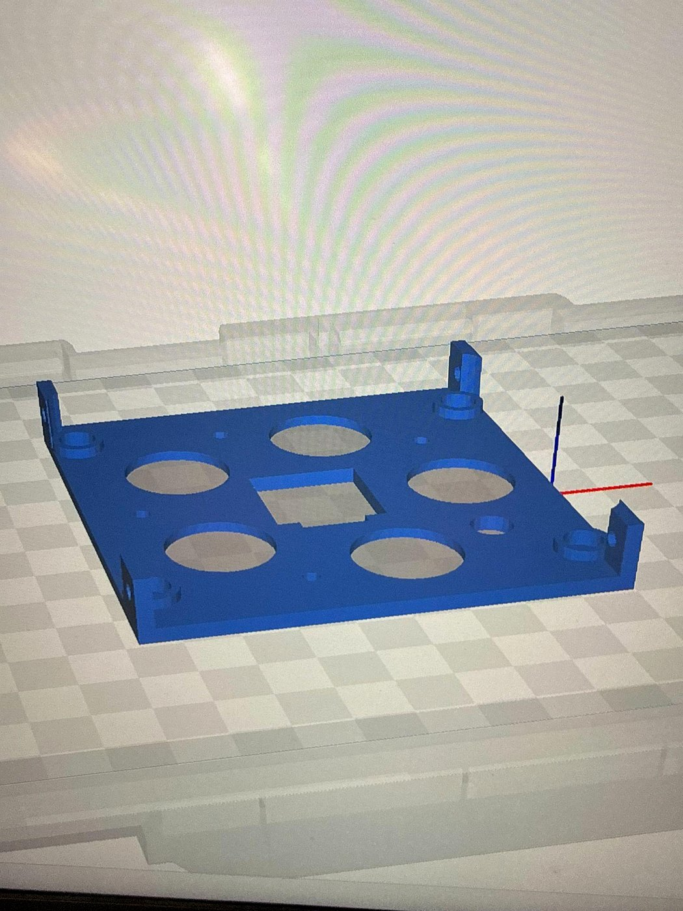
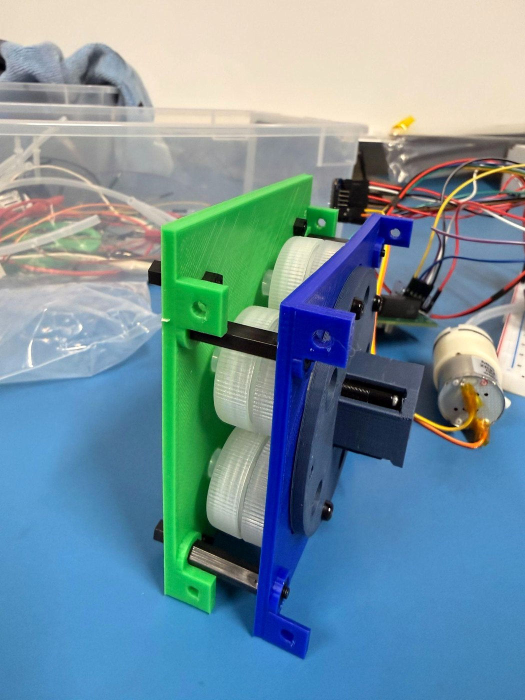
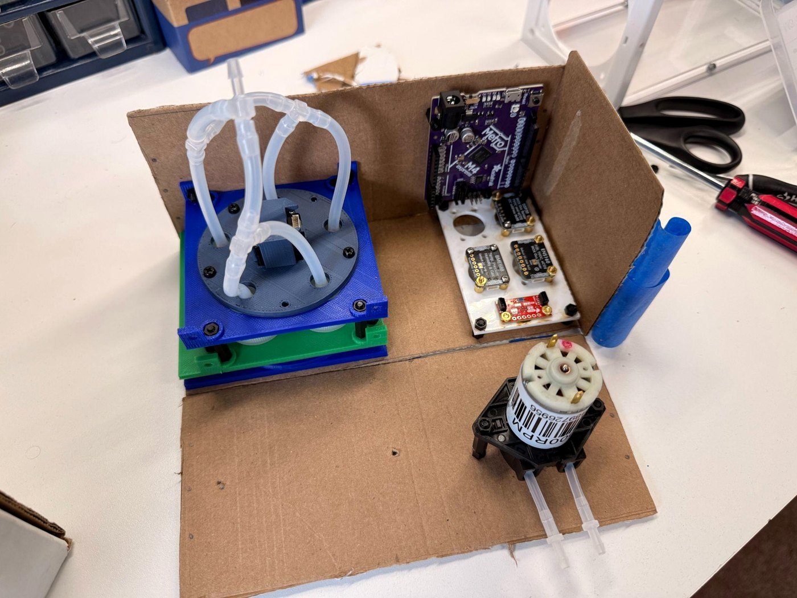
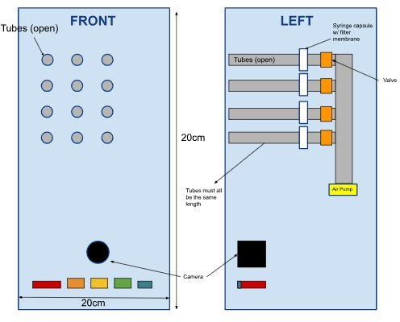
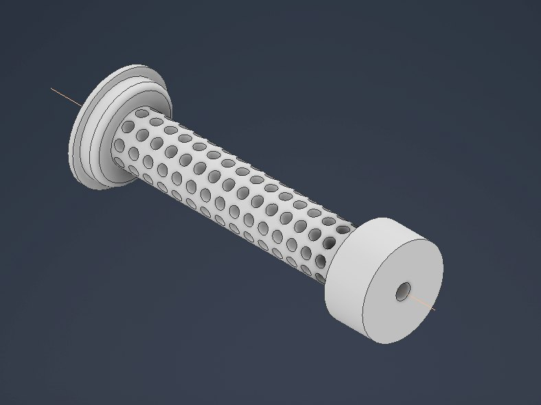
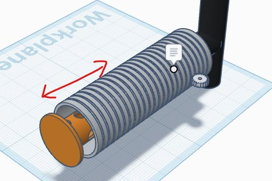
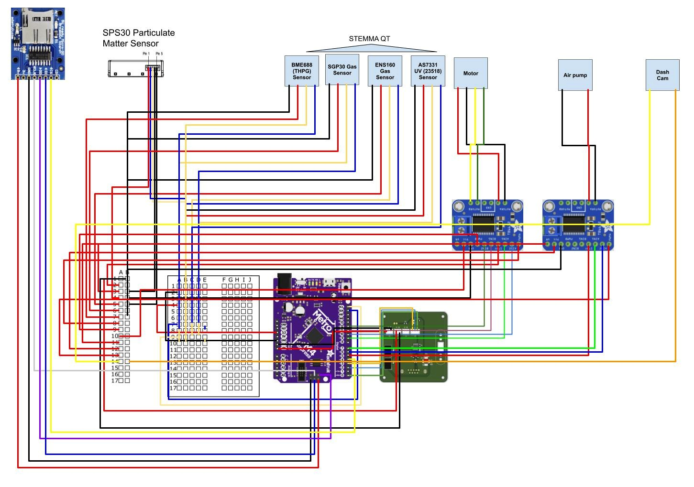
Atmospheric Profiles & Forensic Telemetry
Raw flight file WORLD_24.txt contains 21,543 lines across 30 power-on sessions (including pre-flight classroom simulator runs and pad checks). Isolating Session 28 (the 16,461-row flight from Page, AZ) and Sessions 29–30 (post-termination freefall) reveals textbook stratospheric physics—plus the exact barometric signature of the crash.
Vertical Temperature Inversion
Outside air cooled steadily during ascent to -63.2 °C (-81.8 °F) near the 15.5 km tropopause before warming in the ozone layer. Meanwhile, inside the unventilated near-vacuum flight box (23.8 hPa), solar heating warmed our payload from -21.8 °C up to +38.3 °C.
Barometric Pressure & Desert Humidity
Ambient pressure fell exponentially from 868.8 hPa (12.59 PSI) at Page Municipal Airport (4,173 ft) down to 22.2 hPa (0.39 PSI) at 84,185 ft—leaving over 97.6% of Earth’s atmosphere below our experiment as humidity dropped to 0.0%.
Stratospheric UV Radiation Surge
Climbing above most of Earth’s protective ozone column caused UVA to jump nearly 20× and energetic UVB to surge over 85× ground levels. Rapid oscillations reflect the suspended gondola rotating gently toward and away from direct sunlight.
124 MPH Post-Termination Plunge
After flight termination at 83,679 ft, World View telemetry disconnected—but our Metro M4 briefly rebooted twice in mid-air! Across 151 seconds, our BME688 barometer logged altitude plunging from 35,259 ft (10,747 m) down to 7,631 ft (2,326 m) at 55.3 m/s (124 mph) right before impact.
Understanding Our 1,992 Logged I²C Bus Errors ([Errno 5])
Real suborbital flight testing exposes hardware to harsh thermal swings (-63 °C external) and near-vacuum conditions. During the flight, our error_log.txt recorded 1,992 [Errno 5] Input/output error events in 15-retry bursts along the STEMMA QT I²C sensor chain:
- SPS30 Optical Particulate Sensor: Failed to initialize on the bus during flight, preventing continuous laser PM comparisons against our physical filters.
- Intermittent Dropouts & Register Bit-Flips: Temporary I²C NACK bursts created brief
N/Agaps (~11.7% of AS7331 UV rows and ~3.8% of BME688 rows) and exactly 5 single-second register bit-flip spikes on the BME688 (reading195.59 °C/-263.8 hPa). - Resilient Fault Handling: Because our CircuitPython code caught I²C exceptions rather than crashing the main loop, the Metro M4 kept running for the entire 5+ hour mission—successfully triggering every single motor & pump stage!
When Flight Testing Hits Hard
At the end of the flight over the rugged Arizona Strip, something went wrong during descent and landing. When the shipping box arrived back in Wisconsin, our payload enclosure had been violently crushed—and only one sample survived.
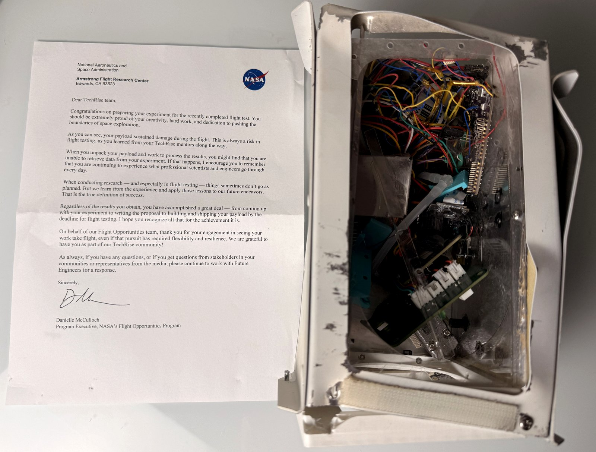
“As you can see, your payload sustained damage during the flight. This is always a risk in flight testing, as you learned from your TechRise mentors along the way… When conducting research — and especially in flight testing — things sometimes don’t go as planned. But we learn from the experience and apply those lessons to our future endeavors. That is the true definition of success.”
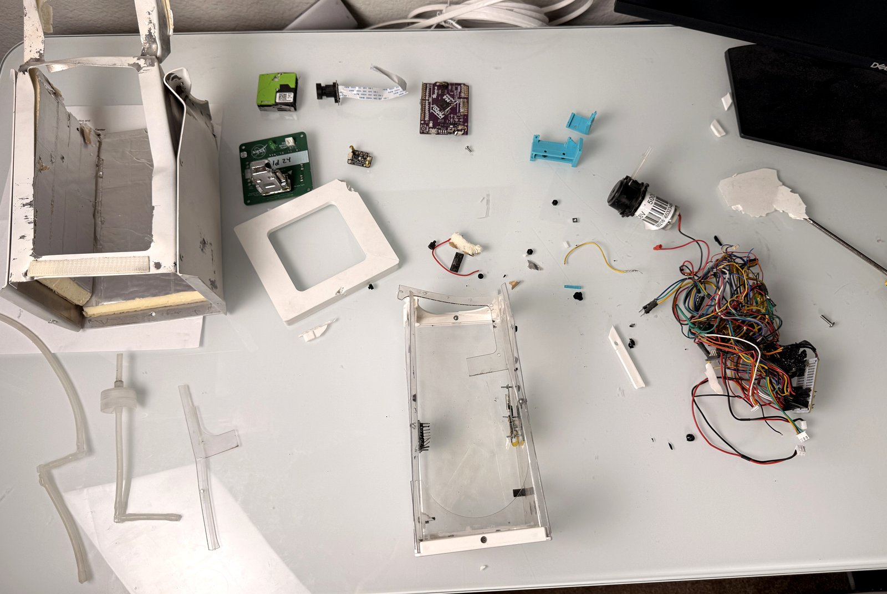
W 24 flight tag.
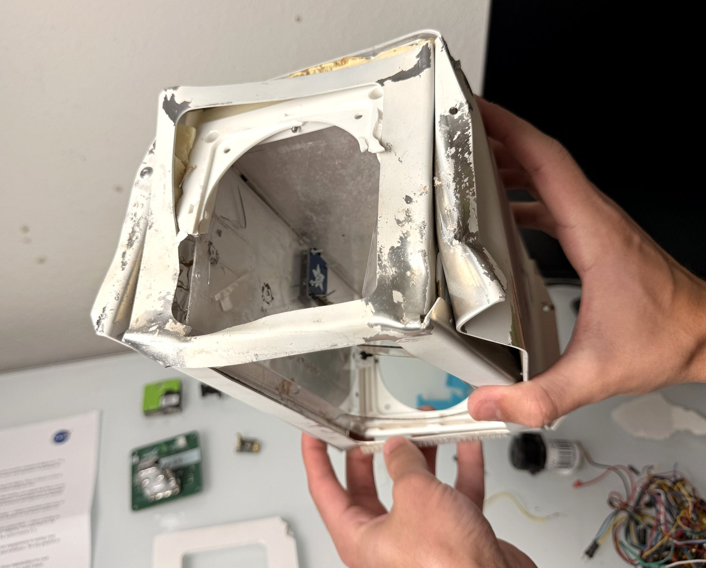
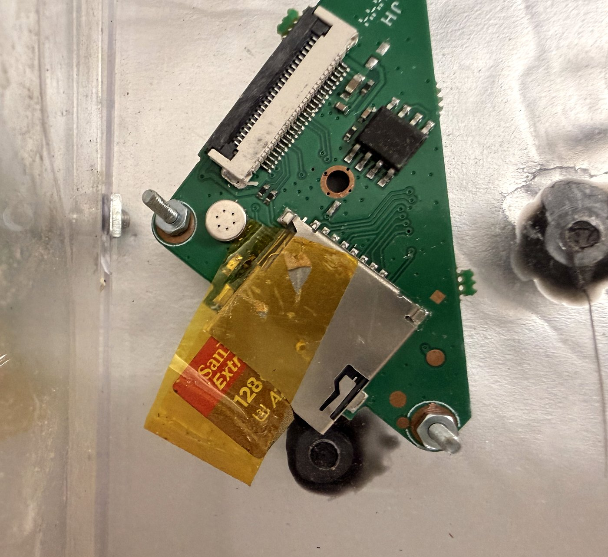
The Surviving Control Sample & Zirconium Discovery
With only the rear-mounted control filter capsule surviving the crash, we brought the preserved 0.1 µm polycarbonate membrane to a professor at the University of Wisconsin–Madison for high-resolution Scanning Electron Microscopy (SEM) and Energy Dispersive X-ray Spectroscopy (EDS). What we found on that “unexposed” filter surprised everyone.
Elemental Composition Mapping
Click any X-ray emission line below to inspect its spatial distribution across the ~1.8 µm particle cluster (1 µm scale bar) and blend it onto the electron micrograph:
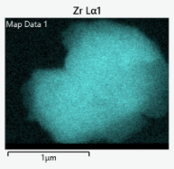
View All 8 Maps ↗Zirconium (Zr Lα1) — Primary Discovery
Intense, sharply bounded Zr Lα1 X-ray emission maps directly to the ~1.8 µm crystalline/agglomerated grain sitting atop the 0.1 µm polycarbonate pores. Co-localized with Oxygen and Phosphorus (consistent with zirconium phosphate/oxide or refractory zircon-type mineral/aerospace alloy phase).
What Does Finding This on the Control Capsule Mean?
Finding refractory metallic and mineral microparticles—including a unique zirconium-bearing grain alongside Ni, Fe, Cr, and Ce signatures—on the rear shielded control capsule proved two key points:
- Containment vs. Extreme Environments: Passive rear shielding without hermetic positive-pressure seals still permitted micron-scale stratospheric/ambient or crash-intrusion aerosols to reach the control membrane—crucial feedback for designing future suborbital sample-return chambers.
- Validated SEM/EDS Pipeline: The 0.1 µm track-etched polycarbonate membrane preserved sub-micron particle morphology cleanly at 34,970× magnification, validating our post-flight analytical methodology at UW–Madison.
The Student Engineering Team
Built from concept to flight readiness in Oconomowoc, Wisconsin, with guidance from our teacher lead and professional NASA TechRise & Future Engineers mentors.
Will S.
Max S.
Ayden P.
Brady K.
Brayden O.
Hailey K.
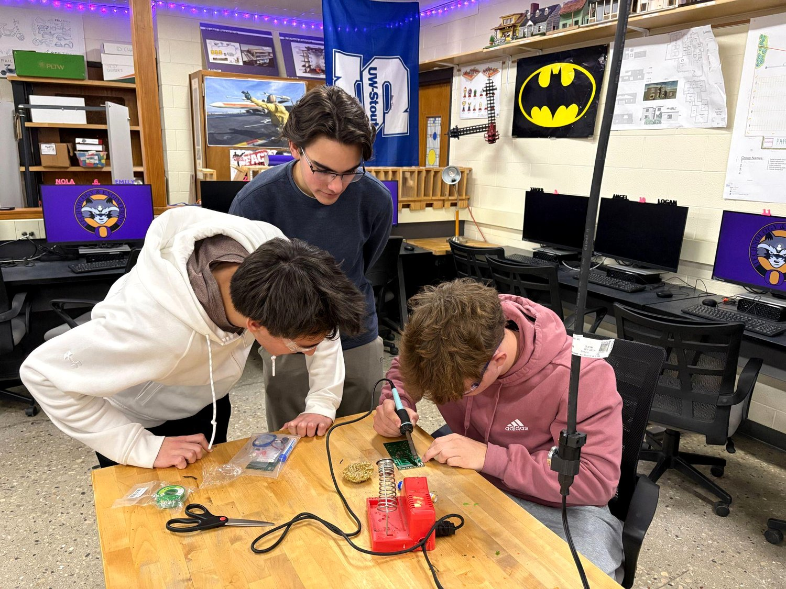
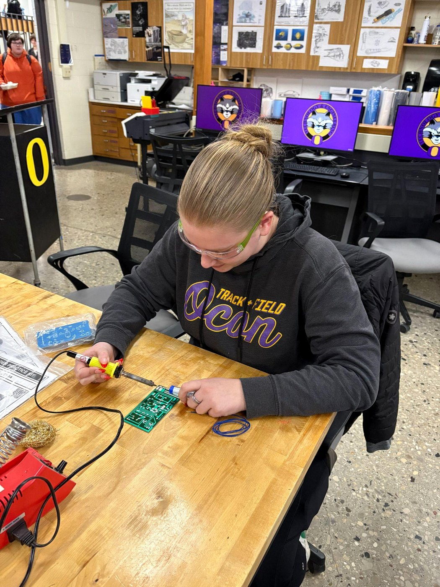
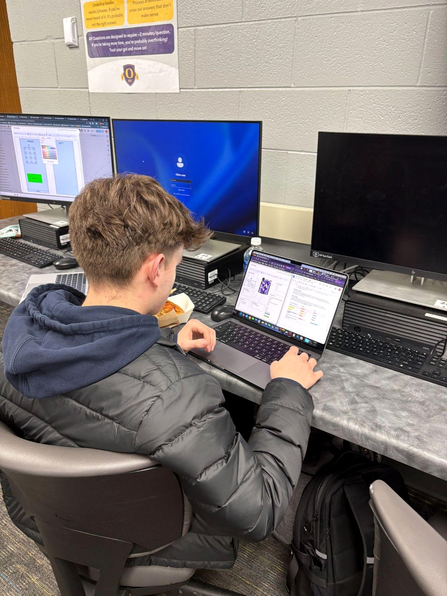
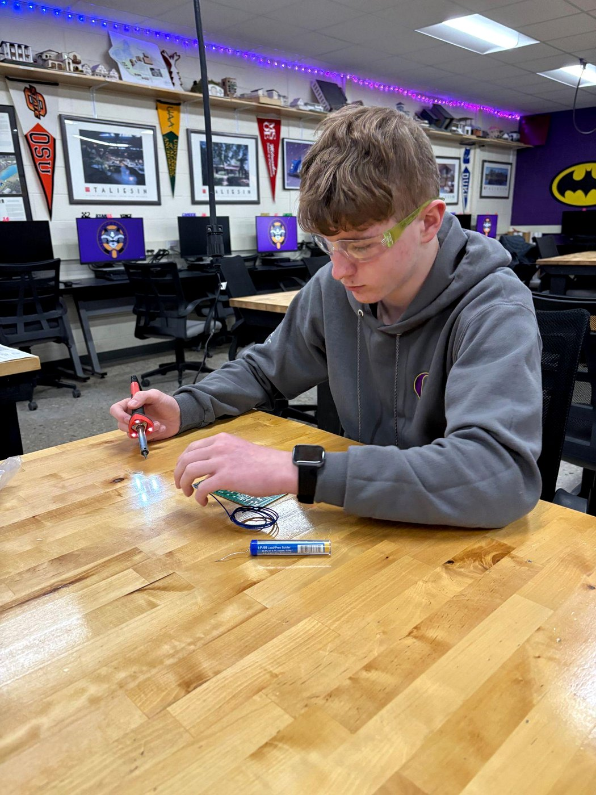
What Suborbital Engineering Taught Us
- Focus & Time Management: Our biggest takeaway during the build was not getting sidetracked troubleshooting edge-case hypotheticals at the expense of core mechanical and software integration deadlines.
- Working with Professional Engineers: Weekly sessions with Future Engineers mentors gave us practical troubleshooting habits—from current budgeting to mechanical strain relief and Kapton-taping SD cards.
- Designing for the Worst Case: Hermetic sample isolation, armored sample vaults, and fault-tolerant I²C bus recovery are essential when your lab sits 16 miles up and returns to Earth at over 120 mph.
Thank You
This project was made possible through the support, mentorship, and facilities of:
- Mrs. Finke (Team Lead) & Oconomowoc High School (Oconomowoc, WI)
- NASA Flight Opportunities Program & the NASA TechRise Student Challenge administered by Future Engineers
- World View Enterprises (Stratollite Flight
N141WV/World 24launch & recovery team) - University of Wisconsin–Madison (Scanning Electron Microscopy & EDS elemental microanalysis)